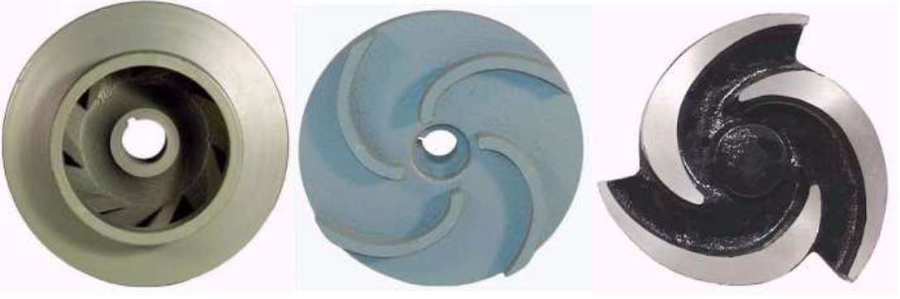

Sistemas de Bombeamento
Primeiramente, um sistema qualquer pode ser definido como um conjunto de elementos distintos interagindo entre si
objetivando um mesmo resultado. Assim, um sistema de bombeamento consiste em uma série de máquinas, peças e equipamentos
que, em conjunto, trabalham para o transporte de um fluído de um reservatório inferior até um reservatório superior.
Dessa forma, o principal equipamento de um sistema de bombeamento é a bomba. Esta é responsável pela realização do
processo de transformação de energia mecânica em energia hidráulica, sendo este o objetivo principal de um sistema de
bombeamento.
Máquinas hidráulicas
Máquinas Hidráulicas são máquinas que trabalham fornecendo, retirando ou modificando a energia do líquido em escoamento. As máquinas hidráulicas podem ser classificadas em:
Bombas hidráulicas
Bombas são máquinas geratrizes cuja finalidade é realizar o deslocamento de um líquido por escoamento. Sendo uma máquina geratriz, ela transforma o trabalho mecânico que recebe para seu funcionamento em energia, que é comunicado ao líquido sob as formas de energia de pressão e cinética. Portanto, o uso de bombas hidráulicas ocorre sempre que há necessidade de aumentar a pressão de trabalho de uma substância líquida contida em um sistema e/ou a velocidade de escoamento.
Classificação de bombas
Devido a grande diversidade de bombas existentes, iremos utilizar aqui uma classificação resumida, dividindo-as em dois grandes grupos: Bombas volumétricas, também conhecidas como de deslocamento positivo e turbo bombas, também conhecidas como rotodinâmicas
Bombas volumétricas
Nas bombas volumétricas ou de deslocamento positivo, a movimentação do fluído é causada diretamente pela ação do órgão
de impulsão da bomba que obriga o fluído a executar o mesmo movimento a que está sujeito este impulsor (êmbolo,
engrenagens, lóbulos, palhetas). Dá-se o nome de volumétrica porque o fluído, de forma sucessiva, ocupa e desocupa
espaços no interior da bomba, com volumes conhecidos, sendo que o movimento geral deste fluído dá-se na mesma direção
das forças a ele transmitidas, por isso são chamadas de deslocamento positivo. As Bombas Volumétricas dividem-se em:
1. Êmbolo ou alternativas (pistão, diafragma, membrana).
2. Rotativas (engrenagens, lóbulos, palhetas, helicoidais, fusos, parafusos, peristálticas).
Turbobombas
As turbobombas tem como princípio de funcionamento a criação de duas zonas de pressão diferenciadas, uma de baixa pressão (sucção) e outra de alta pressão (recalque). Para que ocorra a formação destas duas zonas distintas de pressão, é necessário existir no interior da bomba a transformação da energia mecânica (de potência), que é fornecida pela máquina motriz (motor ou turbina), primeiramente em energia cinética, a qual irá deslocar o fluído, e posteriormente, em maior escala, em energia de pressão, a qual irá adicionar “carga” ao fluído para que ele vença as alturas de deslocamento. Nas turbobombas, a movimentação do fluído ocorre pela ação de forças que se desenvolvem na massa do mesmo, em consequência da rotação de um eixo no qual é acoplado um disco (rotor, impulsor) dotado de pás (palhetas, hélice), o qual recebe o fluído pelo seu centro e o expulsa pela periferia, pela ação da força centrífuga, daí o seu nome mais usual. A finalidade do rotor, também chamado “impulsor”, é comunicar à massa líquida aceleração, para que adquira energia cinética e se realize assim a transformação da energia mecânica de que está dotado. O rotor é, em essência, um disco ou uma peça de formato cônico dotada de pás.
Classificação das bombas quanto à direção do movimento do fluido dentro do rotor
Centrífugas ou radiais
O líquido penetra no rotor paralelamente ao eixo (centro0, sendo dirigido pelas pás para a periferia, direção radial, em razão da força centrífuga gerada pelo rotor em movimento. A movimentação do fluído dá-se do centro para a periferia do rotor, no sentido perpendicular ao eixo de rotação. Este tipo de bomba hidráulica é o mais usado no mundo destinadas a vencer grandes alturas com vazões relativamente baixas.
Fluxo axial
Nestas bombas, as trajetórias das partículas líquidas, pela configuração que assumem as pás do rotor e as pás guias, começam paralelamente ao eixo e se transformam em hélices cilíndricas. Forma-se um hélice de vórtice forçado, pois, ao escoamento axial, superpõe-se um vórtice forçado pelo movimento das pás. O movimento do fluído ocorre paralelo ao eixo de rotação. Específicas para grandes vazões e pequenas alturas de elevação.
Fluxo misto
O movimento do fluído ocorre na direção inclinada (diagonal) ao eixo de rotaçãoou seja entra axialmente e sai em uma direção diagonal, média entre axila e radial. São empregadas em grandes vazões e médias alturas.
Classificação das bombas quanto à estrutura do rotor
Fechado
Quando, além do disco onde se fixam as pás, existe uma coroa circular também presa às pás. Pela abertura dessa coroa, o líquido penetra no rotor. Para água tratada ou potável de boa qualidade físico-química.
Semiaberto ou semifechado
Quando existe apenas um disco onde se fixam as pás do rotor. Para recalques de água bruta sedimentada.
Aberto
Quando não existe essa coroa circular anterior (Figura 15c). Usado em bombeamentos de águas residuárias ou água bruta de má qualidade.
Rotores de turbobombas fechado, semi-aberto e aberto, respectivamente.
Classificação das bombas quanto ao número de estágios
Monoiestágio
Nela existe apenas um rotor e, portanto, o fornecimento da energia ao líquido é feito em um único estágio (constituído por um único rotor). Empregadas em situações de baixa a médias alturas manométricas.
Multiestágio
Quando a altura de elevação é grande, faz-se o líquido passar sucessivamente por dois ou mais rotores fixados ao mesmo eixo e colocados em uma caixa cuja forma permite esse escoamento com múltiplos estágios, Figura 165b. Este recurso reduz as dimensões e melhora o rendimento, sendo empregadas para médias a grandes alturas manométricas.
Bombas centrífugas de simples estágio e multiestágios, respectivamente.
Classificação das bombas quanto ao número de estágios
As instalações de bombeamento podem apresentar em sua forma, dependendo de seu objetivo e importância, variações as mais diversas. Contudo e visando, principalmente, um estudo sistematizado das mesmas, apresentamos, com a respectiva nomenclatura, o esquema de uma simples e típica instalação de bombeamento.
Esquema típico de um sistema de bombeamento.